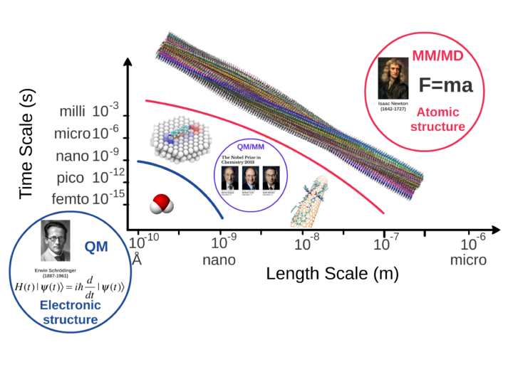
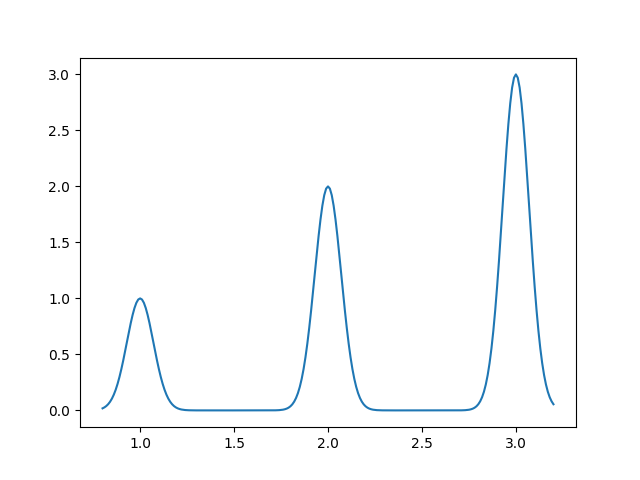
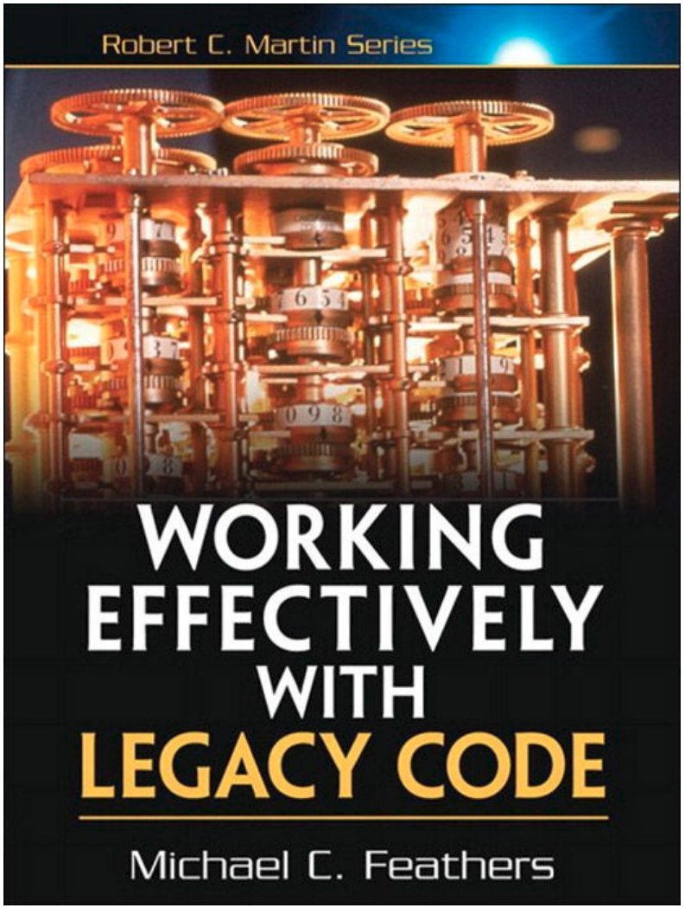
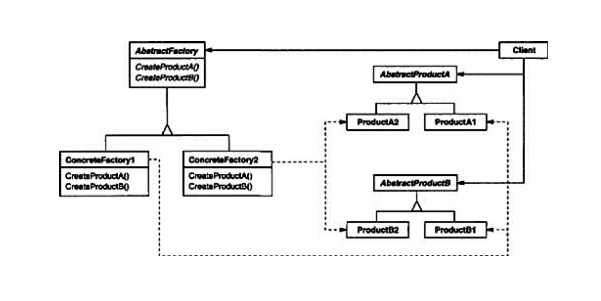

name: inverse layout: true class: center, middle, inverse --- <script type="text/x-mathjax-config"> MathJax.Hub.Config({ tex2jax: { inlineMath: [ ['$','$'], ["\\(","\\)"] ], processEscapes: true } }); </script> <script type="text/javascript" src="https://cdn.mathjax.org/mathjax/latest/MathJax.js?config=TeX-AMS-MML_HTMLorMML"> </script> # Pythonizing workflows ## with modern and legacy chemistry softwares ### Euroscipy2018 ### Olav Vahtras --- layout: false ## About <a href="https://www.kth.se/profile/vahtras">me</a> * KTH Royal Institute of Technology <img src="https://www.kth.se/img/icon/kth-mobile-icon.png" height="40"> * Professor of Theoretical Chemistry * Software Carpentry/Data Carpentry <img src="https://carpentries.org/assets/img/TheCarpentries.svg" height="40"> * Co-editor of <a href="http://www.scipy-lectures.org/">SciPy Lecture Notes</a> * Teaching Python at master and Ph.D. levels --- ## What we do  --- ## What we do in practice * Solve large eigenvalue equations $$ Ax = \lambda x $$ * Solve large linear systems of equations $$ Ax = b $$  * Typical dimension $10^6$ * Matrix too large to store * Solved by iteration --- ## Our codes ### Some old * The Dalton project www.daltonprogram.org * Research development tool since 1980s * Mostly Fortran * Some C/C++ * $\gt 10^6$ *SLOC* -- <div class="col-md-6" markdown="1"> </div> <div class="col-md-6">  </div> --- ### History * Successful Scandinavian collaboration * Code has evolved organically over > 30 years --- ### Problems * No unit tests * A number of (long) end to end tests * Many common blocks #### However * A lot of functionality that will never be reimplemented * Code will not go away * Still ok for teaching --- ## Some new * Under development * Modern C++ implementations with MPI/OpenMP/CUDA --- # Under a Python umbrella  *From <a href="https://www.amazon.com/Design-Patterns-Object-Oriented-Addison-Wesley-Professional-ebook/dp/B000SEIBB8">Design Patterns</a>, Gamma, Helm, Johnson and Vlissies* --- ## High level * Managing legacy monolithic code : Python glue * Generating input files * Execute program * Extract data --- ## Intermediate level * Manage MPI from the Python layer * Split the communicator over different computational parts * Possibility to divide problem to optimize scaling --- ``` from mpi4py import MPI comm = MPI.COMM_WORLD rank, size = comm.Get_rank(), comm.Get_size() # Split the communicator in groups of four sub_group =rank // 4 sub_comm = MPI.Comm.Split(comm, sub_group, rank) sub_rank, sub_size = sub_comm.Get_rank(), sub_comm.Get_size() print(f"World {rank}({size}) Subgroup {sub_group}:{sub_rank}({sub_size})") sub_comm.Disconnect() ``` ``` $ /usr/bin/mpirun -n 8 python3 split_mpi.py World 0(8) Subgroup 0:0(4) World 1(8) Subgroup 0:1(4) World 2(8) Subgroup 0:2(4) World 3(8) Subgroup 0:3(4) World 4(8) Subgroup 1:0(4) World 5(8) Subgroup 1:1(4) World 6(8) Subgroup 1:2(4) World 7(8) Subgroup 1:3(4) ``` --- ``` #hello.py: passing communicator from Python to Fortran from mpi4py import MPI import helloworld comm = MPI.COMM_WORLD rank = comm.Get_rank() fcomm = comm.py2f() helloworld.sayhello(fcomm) ``` ``` !helloworld.f90 subroutine sayhello(comm) use mpi implicit none integer :: comm, rank, size, ierr call MPI_Comm_size(comm, size, ierr) call MPI_Comm_rank(comm, rank, ierr) print *, 'Hello, World! I am process ',rank,' of ',size,'.' end subroutine sayhello ``` ``` $ /usr/bin/mpirun -n 4 python3 hello.py ``` --- ## Summary and outlook * On-going work * Python as a glue between compiled codes * High- and medium-level logic in Python * Low-level numerical work in (C++ Boost) or Fortran (f2py) * Combination of pytest and Google unit testing To be continued...